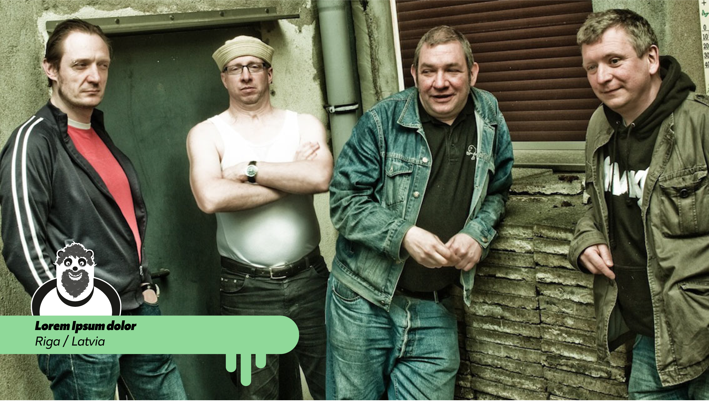

Saturday 03 April 2021
-
13:00 - 14:00Yannick ZimmermannCologne / DE
Die Kassierer ist eine deutsche Punk-Band aus Bochum-Wattenscheid. Die Band wurde 1985 in der Besetzung Wolfgang „Wölfi“ Wendland, Mitch Maestro und Volker Kampfgarten (eigentlich Volker Wendland)[1] gegründet. Der Name geht der Legende nach darauf zurück, dass die Mitglieder an der Kasse eines selbstveranstalteten Konzerts saßen und dabei spontan eine Band gründeten. Nach zeitweilig wechselnder Gitarrenbesetzung, darunter der spätere Ruhrpott-AG-Rapper Pahel Brunis und Achim „Wah Wah“ Weigel von Carnival of Souls, stieß schließlich noch Nikolaj Sonnenscheiße (eigentlich Nikolaj Hagemeister) fest zur Band.
-
14:00 - 15:00Mathis PollyDortmund / DE
Die Kassierer ist eine deutsche Punk-Band aus Bochum-Wattenscheid. Die Band wurde 1985 in der Besetzung Wolfgang „Wölfi“ Wendland, Mitch Maestro und Volker Kampfgarten (eigentlich Volker Wendland)[1] gegründet. Der Name geht der Legende nach darauf zurück, dass die Mitglieder an der Kasse eines selbstveranstalteten Konzerts saßen und dabei spontan eine Band gründeten. Nach zeitweilig wechselnder Gitarrenbesetzung, darunter der spätere Ruhrpott-AG-Rapper Pahel Brunis und Achim „Wah Wah“ Weigel von Carnival of Souls, stieß schließlich noch Nikolaj Sonnenscheiße (eigentlich Nikolaj Hagemeister) fest zur Band.